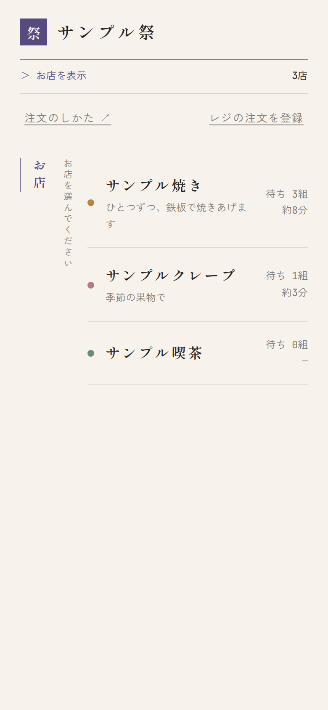
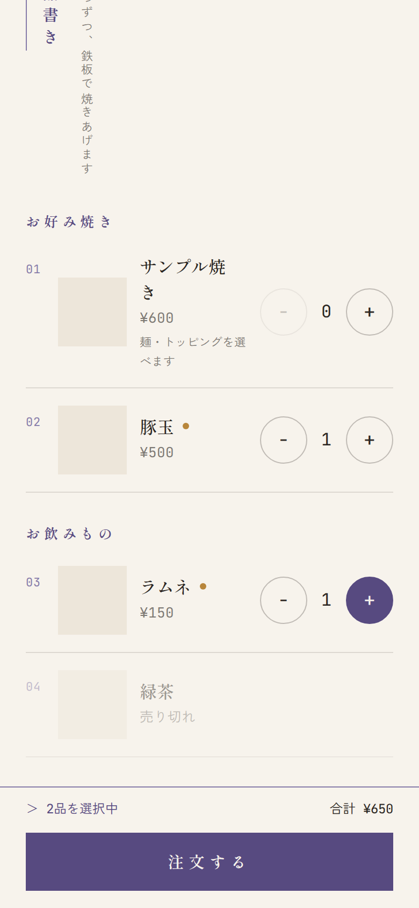
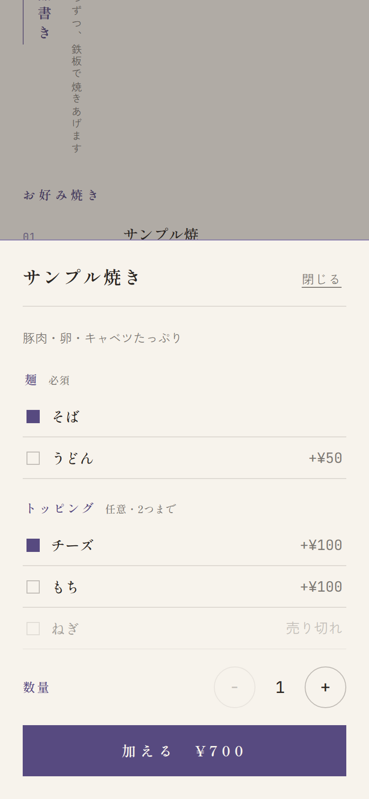
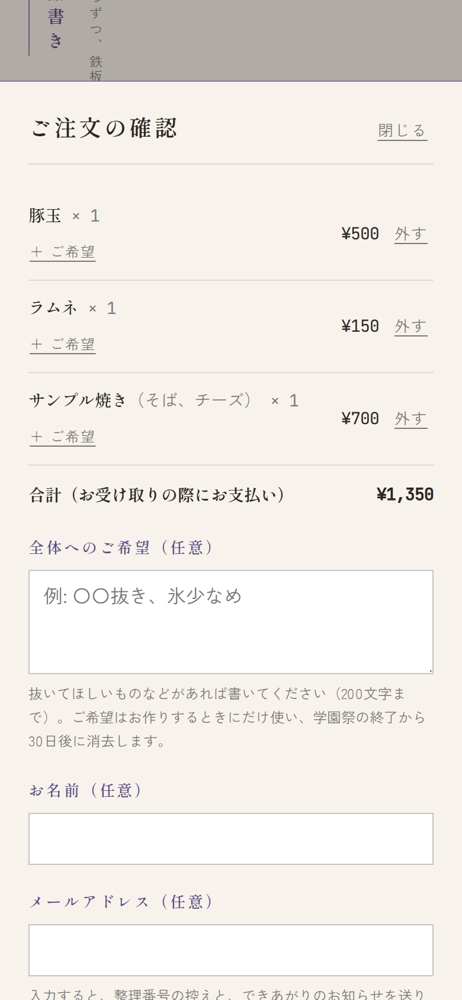
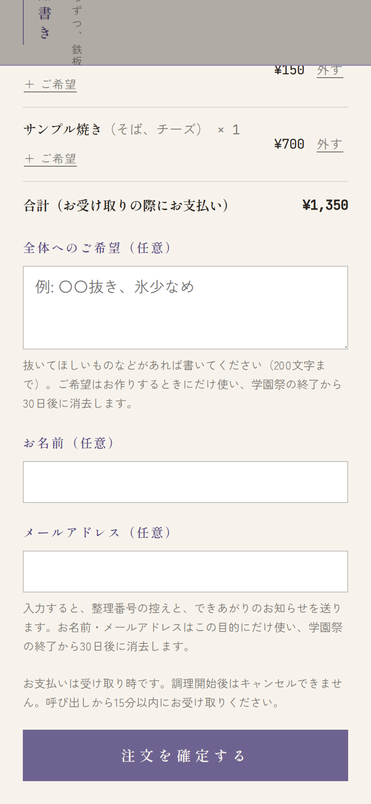
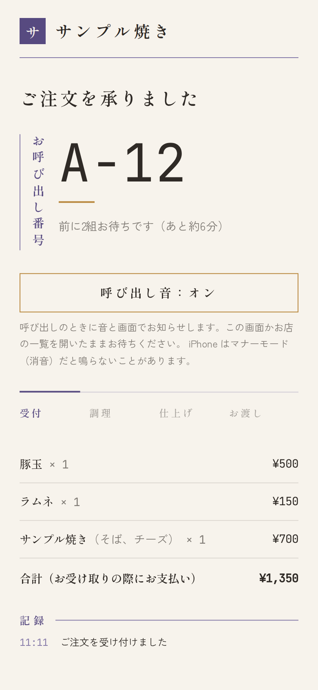
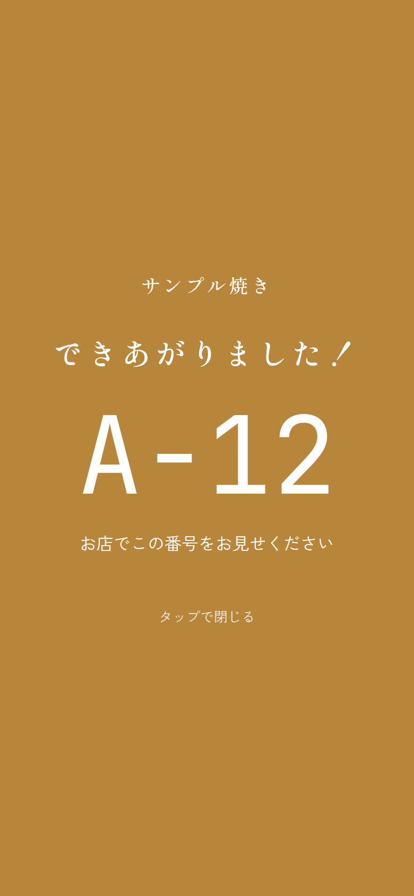
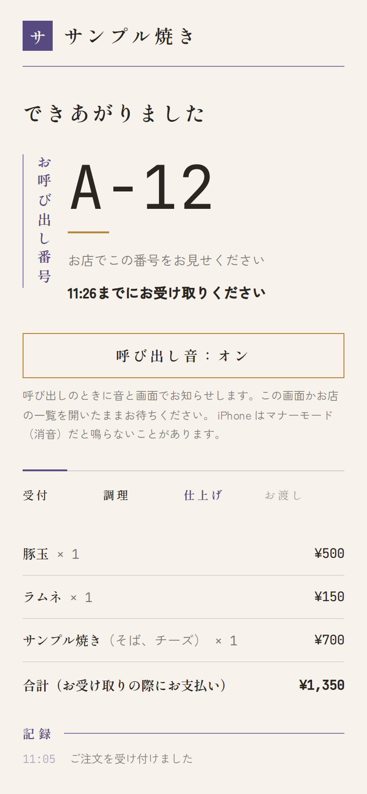
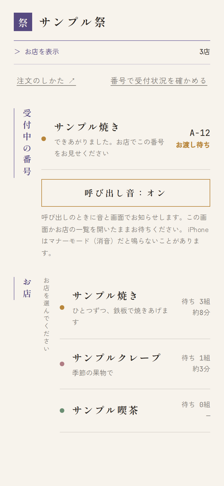
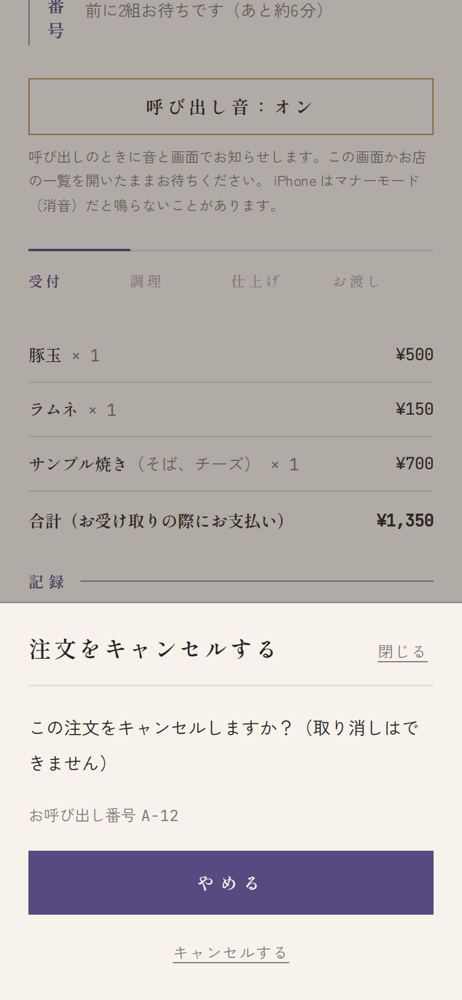

1注文する
お店を選びます
注文したいお店を押します。右側に、いま待っている組の数と、待ち時間の目安が出ています。


品を選びます
品の右の + で数を増やし、− で減らします。
選んだ数と合計の金額は、画面のいちばん下に出ます。選び終わったら 注文する を押します。
- 「売り切れ」の品は選べません。
- 1回に注文できる数には上限があります（例:「おひとり様 5点まで」）。お品書きの横に書いてあります。


選べるもの（麺・トッピングなど）を選びます
「〇〇を選べます」と書いてある品は、+ を押すと選ぶ画面が出ます。
- 必須は1つ選んでください。任意は選ばなくてもかまいません。
- 値段が変わるものは「+¥100」のように出ます。
選んだら 加える を押します。


確かめて、注文を確定します
「ご注文の確認」が出ます。品と金額を確かめてください。
- やめる品は 外す を押します。
- 「ネギ抜き」などのご希望は、品ごとなら ＋ ご希望、注文全体なら「全体へのご希望」に書きます。
- お名前・メールアドレスは書かなくても注文できます。メールアドレスを書くと、番号の控えとできあがりのお知らせがメールでも届きます。
いちばん下の 注文を確定する を押すと、注文が届きます。




注文の時点ではお支払いはありません。品を受け取るときに、お店でお支払いください。
2待つ
お呼び出し番号が出ます
注文すると、お呼び出し番号（例: A-12）が出ます。前に何組待っているかと、待ち時間の目安も出ます。
進み具合は「受付 → 調理 → 仕上げ → お渡し」の線で分かります。この画面は自動で新しくなります。


呼び出し音：オン（タップで有効にする） と出ていたら、画面のどこかを1回タップしてください。呼び出し音：オン に変われば、音が鳴る状態です。
待つあいだは、この画面か「お店の一覧」を開いたままにしてください。ほかのお店を見て回ってもかまいません（お店の一覧やお品書きを見ていても、呼び出しは届きます）。
- iPhone はマナーモード（消音）だと鳴らないことがあります。
- 画面を消したり、ほかのアプリに切り替えたりすると、お知らせが遅れることがあります。
ときどき画面を見てください。メールアドレスを入れた方には、メールでもお知らせします。
3受け取る
「できあがりました！」と出たら、お店へ
できあがると、音が鳴り、画面いっぱいに番号が点滅します。どこかをタップすると閉じます。
お店でこの番号を見せて、お支払いをして、品を受け取ってください。


受け取りの期限があります
呼び出しのあとは「〇〇:〇〇までにお受け取りください」と、受け取りの期限が出ます。
期限を過ぎると、お取り置きが終わります。そのときは、お店のスタッフにお声がけください。


食べもの以外のお店では「調理」がなく、「受付 → お呼び出し → 完了」と進みます。順番が来ると「順番になりました」と出るので、お店の受付で番号を見せてください。
レジで注文したとき
レジで注文した方も、スマホでできあがりのお知らせを受け取れます。
- 会計のときに見せられる QR をスマホのカメラで読むと、注文の画面が開き、スマホに登録されます。
- QR を読めないときは、お店の一覧の レジの注文を登録 を押し、お店・お呼び出し番号・4桁の確認コード（レジで伝えられます）を入れます。番号の頭の英字はお店を選ぶと入るので、数字だけを入れてください。
登録したあとは、Web で注文したときと同じように、画面と音でお呼びします。
できあがりをメールで受け取る
注文の画面の「できあがりをメールで受け取る」にメールアドレスを入れると、できあがったときにメールでもお知らせします。注文のあとでも、登録・変更・削除ができます。
メールアドレスはできあがりのお知らせにだけ使い、学園祭が終わってから決められた日数がたつと削除します（日数は、メールアドレスの欄の下に出ています）。
画面を閉じてしまったら


別のスマホで見るときや、ブラウザの履歴を消したときは、「受付中の番号」に出ません。
- メールアドレスを登録していれば、メールのリンクから注文の画面を開けます。
- レジで注文した方は、レジで受け取った QR か確認コードで、もう一度登録できます。
- どちらもないときは、お店のスタッフにお呼び出し番号を伝えてください。
注文をキャンセルしたいとき
注文の画面の下のほうにある 注文をキャンセルする を押し、キャンセルする を押します（やめる を押すと、注文はそのままです）。
- 調理が始まると、キャンセルできません。
- キャンセルしたあとで元に戻すことはできません。
- この画面でキャンセルできないときは、お店のスタッフにお声がけください。


よくある質問
アプリや会員登録は必要ですか？
いりません。スマホのブラウザ（Safari・Chrome など）だけで注文できます。
お支払いはいつですか？
品を受け取るときに、お店でお支払いください。注文の時点ではお支払いはありません。
呼び出し音が鳴りません
次のことを確かめてください。
- 呼び出し音：オン になっているか（「タップで有効にする」と出ていたら、画面をタップします）
- マナーモード（消音）になっていないか、音量が小さくないか
- 注文の画面か、お店の一覧を開いたままにしているか
いくつかのお店に注文できますか？
できます。お店ごとに番号が出ます。お店の一覧の「受付中の番号」で、まとめて確かめられます。
あとから品を追加できますか？
確定した注文に品を足すことはできません。もう一度、お品書きから注文してください（別の番号になります）。
「ただいま受付を中止しています」と出ます
学園祭の運営の都合で、新しい注文の受け付けを止めています。しばらくしてから、もう一度開いてください。すでに受け付けた注文は、そのまま進みます。
受け取りの期限を過ぎてしまいました
お店のスタッフにお声がけください。
お名前やメールアドレスは何に使われますか？
番号の控えとできあがりのお知らせを送るためだけに使い、学園祭が終わってから決められた日数がたつと消去します（日数は、入力欄の下に出ています）。書かなくても注文できます。